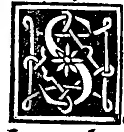

CHAPTER XIII¶
On Its Fourth Ineffable Effect

Numerical Demonstration
For example, let the quantity divided according to our unique proportion be $10$, so that its greater part is $\sqrt{125} - 5$ and its lesser part is $15 - \sqrt{125}$.
If to $10$, the first quantity, we add $\sqrt{125} - 5$, its greater part, they will make a second quantity, namely:
$$(a + b) + a = 10 + (\sqrt{125} - 5) = \sqrt{125} + 5$$
And I say that this second quantity, namely $\sqrt{125} + 5$, is similarly divided according to our proportion into the two said parts: namely, into $\sqrt{125} - 5$ (which was the greater part of the first quantity and is now the lesser part of this second quantity) and into $10$ (which was the whole first quantity and is now the greater part of this second quantity).
This appears manifestly as follows: the product of $\sqrt{125} - 5$ (which was the greater part of the first and is now the lesser part of this second) into the whole of this second quantity, namely $\sqrt{125} + 5$, makes the exact same amount as the square of the mean—or let us say the greater part—of this second quantity, which is $10$; for both products make $100$ exactly, as is required by the said proportion:
$$(\sqrt{125} - 5)(\sqrt{125} + 5) = 125 - 25 = 100 = 10^2$$